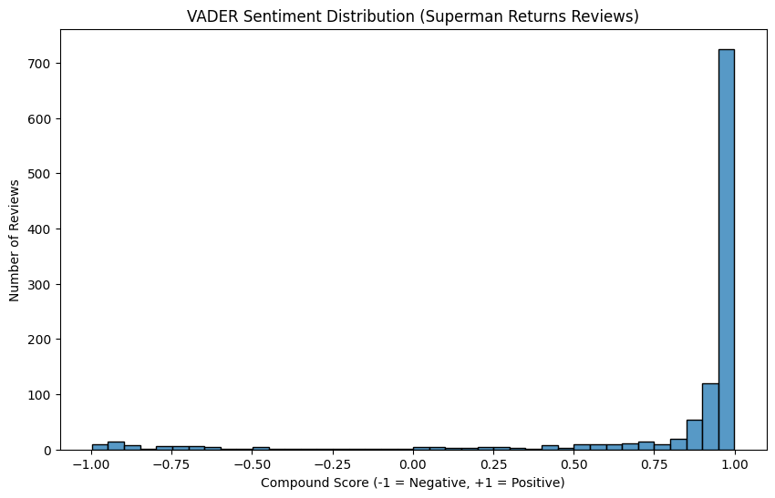
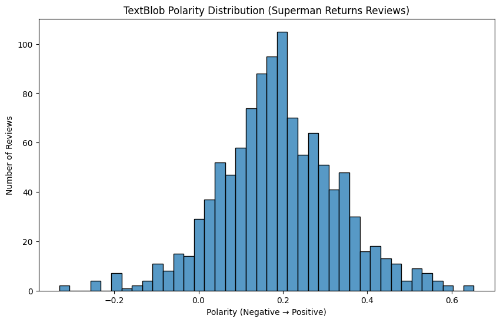
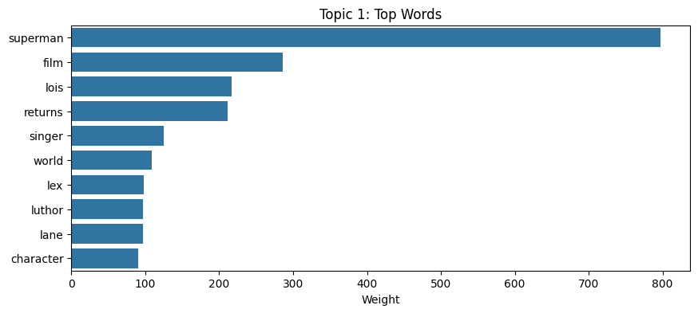
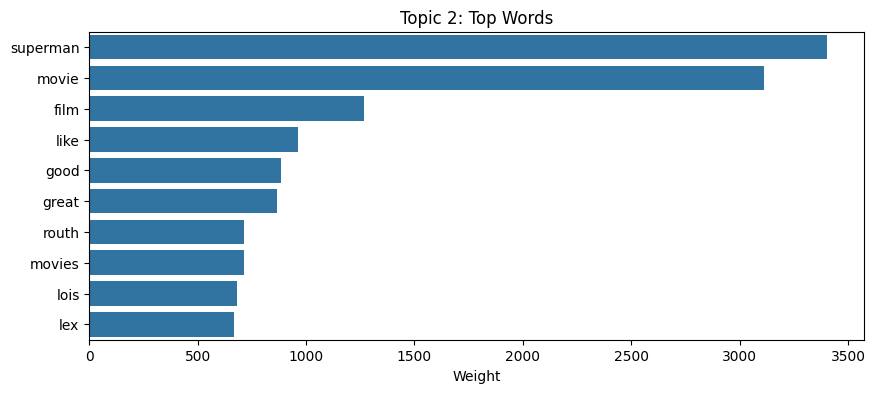
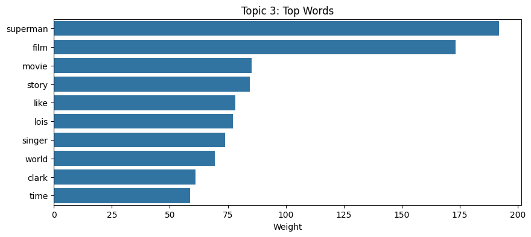
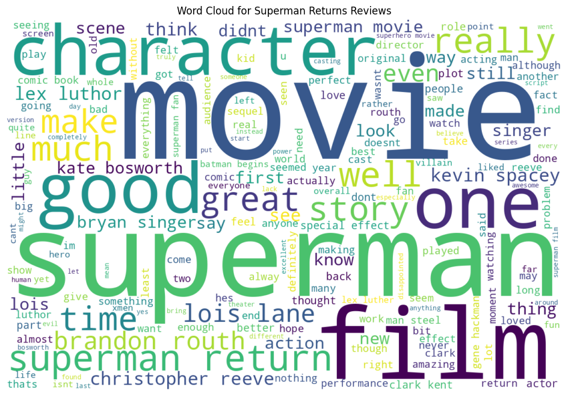

Analysis Overview
Going into the project, I expected reactions to Superman Returns to be mixed, especially because the movie sits between the classic Christopher Reeve era and the darker tone of Man of Steel. Instead, the data shows a surprisingly steady level of positivity. VADER sentiment scores cluster heavily at the extreme positive end, while TextBlob shows a smooth distribution centered just above neutral. Together, these models suggest that most viewers liked the film and that strongly negative reactions are relatively rare compared to the enthusiasm from fans.
Sentiment Analysis
VADER captures emotional intensity in the language of the reviews. The large spike near a score of +1.0 means many reviewers used strongly positive words to describe their experience, often praising Brandon Routh’s performance, the film’s emotional tone, and its respectful connection to the earlier Superman films. There are negative and mixed reactions, but they appear as small bars spread across the left side of the chart, showing that intense criticism exists but doesn’t dominate the discourse.
TextBlob, which measures overall polarity, produces a gentler curve: most reviews fall between slightly negative and moderately positive, with the center of the distribution resting just above zero. This indicates that a large portion of comments are descriptive or mildly favorable rather than emotionally extreme. Compared with VADER, TextBlob suggests that while the language of some fans is intensely enthusiastic, the broader audience tone is steadily positive but not hyperbolic. The contrast between the two tools highlights how viewers balance nostalgia, expectations, and criticism in their responses to the film.
Term Frequency
The most frequent words focus on the core elements of the movie: “superman,” “movie,” and “film” dominate, showing that many reviews talk about the film as a whole experience. Names like “lois,” “lex,” “luthor,” “brandon,” “routh,” “singer,” and “spacey” reveal how much attention viewers give to the cast and director. Positive adjectives such as “good,” “great,” and “original,” along with terms like “character,” “story,” “action,” and “effects,” suggest that audiences are paying close attention both to performances and to how the movie looks and feels on screen.

Topic Modeling
LDA topic modeling separates the reviews into three main clusters. One topic centers on Superman, Lois, Lex, Luthor, and the wider “world” of the film, capturing discussion about relationships, villains, and how the story fits into the larger Superman mythology. A second topic groups words like “movie,” “film,” “good,” “great,” “like,” and “Routh,” which reflects general impressions of quality and the reception of Brandon Routh as the new Superman. The third topic brings together “story,” “world,” “Clark,” “Lois,” and “time,” suggesting that viewers are also thinking about narrative structure, pacing, and how the film interacts with the legacy of earlier Superman stories.
  Word Cloud
The word cloud emphasizes how central Superman himself is to audience reactions: “superman,” “movie,” “film,” and “character” appear in large text, surrounded by positive terms like “good,” “great,” and “well.” Names such as “Lois Lane,” “Brandon Routh,” “Kevin Spacey,” “Bryan Singer,” and “Christopher Reeve” highlight how viewers constantly compare this film to earlier versions and to the actors who defined the roles. Smaller phrases about story, time, action, and emotional moments show that fans are not just reacting to nostalgia; they are also evaluating how successfully Superman Returns updates the character for a new era.
Key Takeaways
Overall, the analysis reveals that Superman Returns is received more warmly and consistently than I initially expected. VADER shows a strong cluster of highly positive reviews, while TextBlob indicates a broad base of mildly to moderately positive commentary. Viewers are especially invested in the performances, the emotional tone, and how the film honors the legacy of earlier Superman stories. Criticism exists—especially around pacing and comparisons to other superhero films—but it does not dominate the conversation.
What This Reveals
The reviews suggest that audiences see Superman Returns as a respectful, nostalgic continuation of the classic Superman mythos rather than a radical reinvention. Many viewers appreciate its emotional approach, its focus on character and relationships, and its attempts to bridge the gap between older portrayals and modern superhero expectations. Compared with the more divisive reaction to Man of Steel, this film appears to function as a kind of sentimental anchor: a movie that may not excite everyone in the same way, but quietly earns a lot of goodwill from fans who value heart, homage, and continuity.
Data and Analysis Files
You can explore the full analysis and dataset below:
Click the links to open or download the files. You can run the notebook in Google Colab to reproduce the charts and analysis.